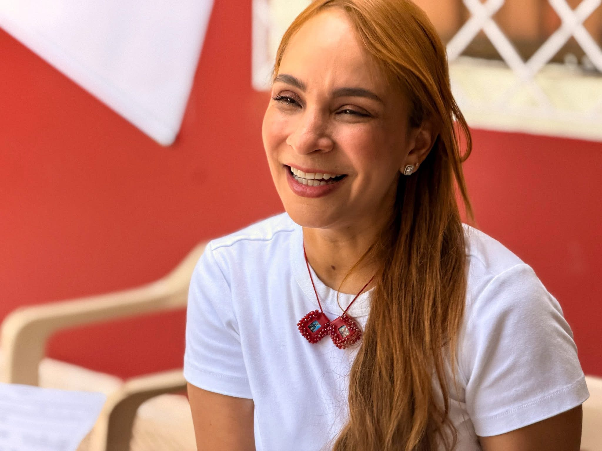
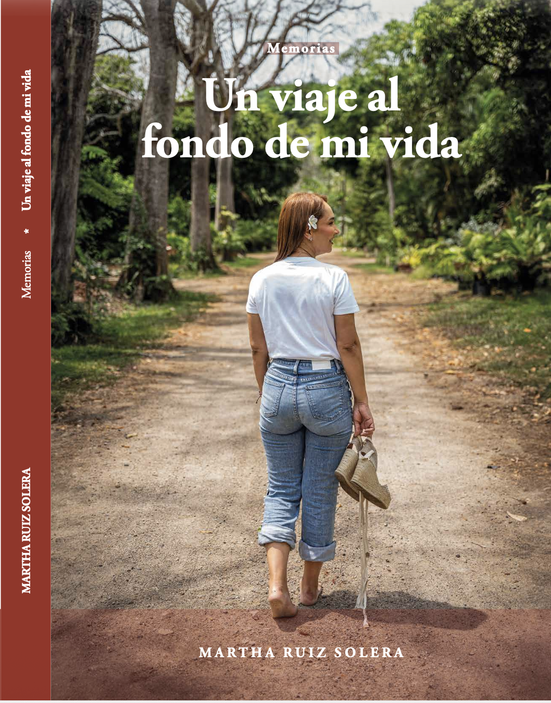

¡El corazón del pueblo!
Psicóloga y escritora por vocación
Más de 17 años al servicio de las familias cordobesas. Hoy llevo al Congreso la voz de las mujeres, la niñez y las comunidades vulnerables de Córdoba.

Llego al Congreso no con promesas vacías, sino con una hoja de ruta construida desde el territorio, escuchando a comunidades que merecen leyes que realmente funcionen.
Acceso real, humano y oportuno a la salud. Reforma al sistema de salud mental, atención primaria en zonas rurales y reducción de barreras burocráticas para los más vulnerables.
Prioridad máximaFortalecer la legislación contra la violencia intrafamiliar. Ampliar la red de Casas Refugio en toda la Costa Caribe. Garantizar derechos reales para madres cabeza de hogar.
Agenda centralDefender la educación pública en regiones apartadas. Reducir la deserción escolar juvenil y garantizar sostenibilidad de sedes universitarias en municipios de Córdoba.
Compromiso regionalCerrar la brecha entre campo y ciudad. Trabajo digno, vías terciarias, acceso a agua potable y energía para las comunidades campesinas e indígenas de los 30 municipios.
Agenda territorialGarantizar desde el Congreso los derechos de niños, niñas y adolescentes. Nutrición, salud infantil y prevención del trabajo infantil como causas irrenunciables.
Causa de vidaRepresentar a comunidades afrodescendientes e indígenas de Córdoba. Defender sus derechos territoriales, identidad cultural y acceso real a los servicios del Estado.
Representación diversaUna reforma integral que ataca desde tres frentes las desigualdades que mantienen atrapadas a miles de familias cordobesas.
Sistema reformado con atención en salud mental, reducción de listas de espera y presencia real en los municipios más apartados del departamento.
Empleo digno, apoyo al emprendimiento informal, reducción de la deserción escolar y fortalecimiento de la economía rural en Córdoba.
Agua potable, energía, vías, protección contra la violencia. Seguridad no es solo ausencia de violencia — es presencia real del Estado.
Colombia necesita congresistas con vocación de servicio público, que trabajen por amor con el pueblo y hagan que las leyes funcionen.
17+ años de trabajo sostenido, desde el sector social de base hasta la gestión departamental y ahora la legislación nacional.
Martha Isabel Ruiz Solera nació y creció en Montería, Córdoba. A los 8 años la violencia del conflicto armado colombiano le arrebató a su padre. Fue su madre, sola, quien la llevó a convertirse en profesional y en la mujer que es hoy.
"Mi esencia es servir, y esa esencia se refleja en cada decisión que he tomado a lo largo de mi vida."
Es psicóloga de formación, especialista en salud y en gestión pública territorial. Pero más que sus títulos, lo que la define es haber recorrido durante casi dos décadas barrios, veredas, resguardos indígenas y municipios apartados de Córdoba, escuchando a las familias que el Estado ignora.
También es escritora. Su libro autobiográfico "Un Viaje al Fondo de mi Vida" (2025) fue nominado en los Voice Arts Awards internacionales y la llevó a ferias del libro en toda la región Caribe.

Una obra que trasciende lo autobiográfico para convertirse en una herramienta de sanación colectiva. Desde la pérdida, el conflicto armado y la resiliencia, Martha narra su historia con una honestidad que conmueve e inspira.
📖 Conocer el libroMi despacho legislativo está al servicio de los cordobeses. Si tienes una propuesta, un problema comunitario o simplemente quieres hacerte escuchar, este es el espacio.
Cada mensaje es leído. Si tu situación requiere atención urgente, indícalo en el tema.
Tu mensaje fue recibido y será leído con atención.